Module EOS · 2105603 Advanced Chemical Engineering Thermodynamics
8 August 2026
An equation of state is not a fit.
It is a statement about which physics
a fluid is allowed to have.
Introduction
State the organising thesis and the six questions applied to every model.
Six questions asked of every model
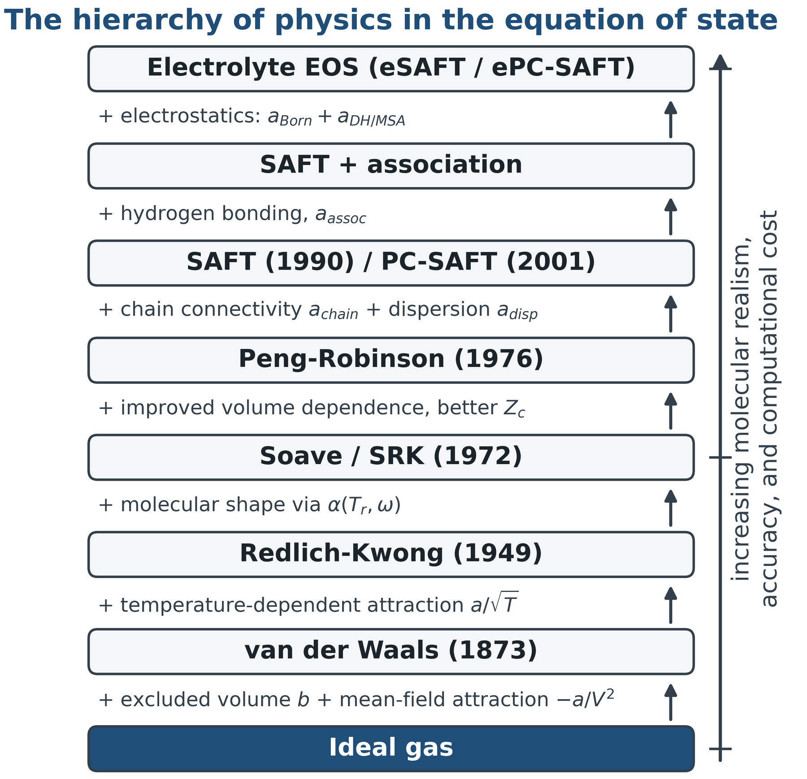
The hierarchy of physics contained in an equation of state.
Introduction
Place every model of the course on a common historical and conceptual axis.
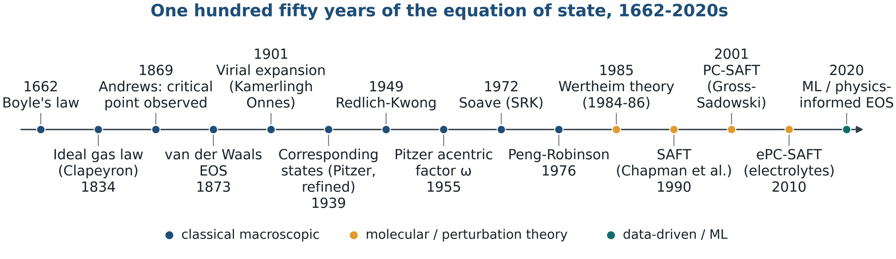
Physical meaning
Classical models (navy) add mean-field physics. Molecular models (amber) add structure: chains, hydrogen bonds, charges. Data-driven models (teal) learn the residual free energy directly.
Engineering implication
The models in industrial use today span a century of physics. A simulator flowsheet routinely mixes a 1976 cubic for the hydrocarbons with a 2001 molecular model for the solvent.
PART I
Chapter 1 Why do we need an equation of state?
Chapter 2 The ideal gas law and the physics it omits
Chapter 1 · Why do we need an equation of state?
Identify the EOS as the closure relation that converts measurable P, T and composition into every other thermodynamic property.
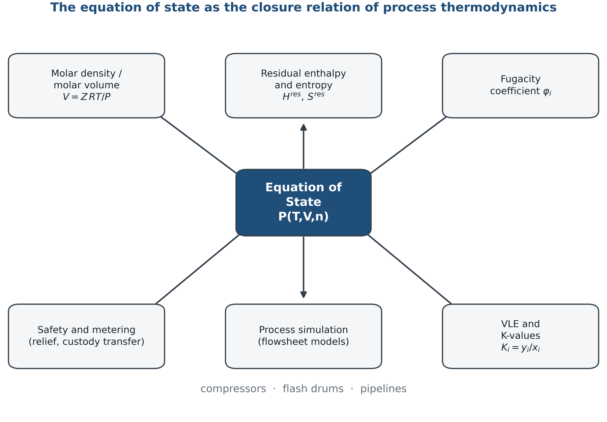
Physical meaning
The EOS supplies the missing relation among P, V, T and composition. Everything else follows from classical thermodynamics without further assumption.
Engineering implication
In a process simulator the EOS is evaluated more often than any other model. Its error propagates into compressor duty, vessel volume, relief sizing and custody metering.
Chapter 1 · Why do we need an equation of state?
Follow the chain from the compressibility factor to the equilibrium ratio, and see that every link needs Z over a pressure range.
1. Define the deviation
Z \equiv \frac{PV}{RT}
2. Fugacity coefficient
\ln\varphi = \int_0^P (Z-1)\,\frac{\mathrm{d}P}{P}
3. Residual enthalpy
H-H^{\mathrm{ig}} = -RT^{2}\int_0^P\left(\frac{\partial Z}{\partial T}\right)_{\!P}\frac{\mathrm{d}P}{P}
4. Equilibrium ratio
\hat f_i^{\,V} = \hat f_i^{\,L} \quad\Longrightarrow\quad K_i \equiv \frac{y_i}{x_i} = \frac{\hat\varphi_i^{\,L}}{\hat\varphi_i^{\,V}}
Why this matters
Each expression is exact given Z(T, P). None of them is an approximation. The entire modelling uncertainty of a process simulation therefore sits in the single function Z, which is what an equation of state supplies. Improving an EOS is not a cosmetic refinement; it is the only way to reduce that uncertainty.
Chapter 1 · Why do we need an equation of state?
Quantify what a modelling error in Z costs in inventory, duty and equipment size.
16.6
per cent
Inventory error
Methane at 300 K and 100 bar. Using PV = RT instead of Peng-Robinson underestimates the mass held in a 50 cubic metre vessel by 16.6 per cent. This is a safety-case quantity.
19.9
per cent
Volume error
The same state point sized on the ideal gas law gives a molar volume of 249.4 instead of 208.0 cubic centimetres per mole, an oversizing of 19.9 per cent.
2.8
per cent
Compressor duty error
Isentropic compression of 100 kilomoles per hour of carbon dioxide from 10 to 80 bar: 202.1 kilowatts with residual properties against 208.0 kilowatts on ideal-gas heat capacities alone.
Chapter 2 · The ideal gas law
State the molecular assumptions behind PV = RT and identify exactly which one each later model repairs.
PV = RT \qquad\Longleftrightarrow\qquad Z = 1
P = \frac{1}{3}\,\frac{N}{V}\,m\langle v^{2}\rangle \quad\Longrightarrow\quad PV = Nk_{\mathrm{B}}T
Kinetic theory gives the same result from the momentum flux at the wall, with the same three assumptions built in.
1. Point particles
Molecules occupy no volume, so the entire container volume is available to every molecule. Repaired by the co-volume b in 1873.
2. No interaction energy
The average potential energy between molecules is zero. Repaired by the mean-field term a/V squared in 1873, then refined for fifty years.
3. Structureless molecules
No shape, no orientation, no directional bonding, no charge. Not repaired until SAFT in 1990 and electrolyte models thereafter.
Chapter 2 · The ideal gas law
Delimit the region of the reduced state plane in which PV = RT is accurate to one and to five per cent.
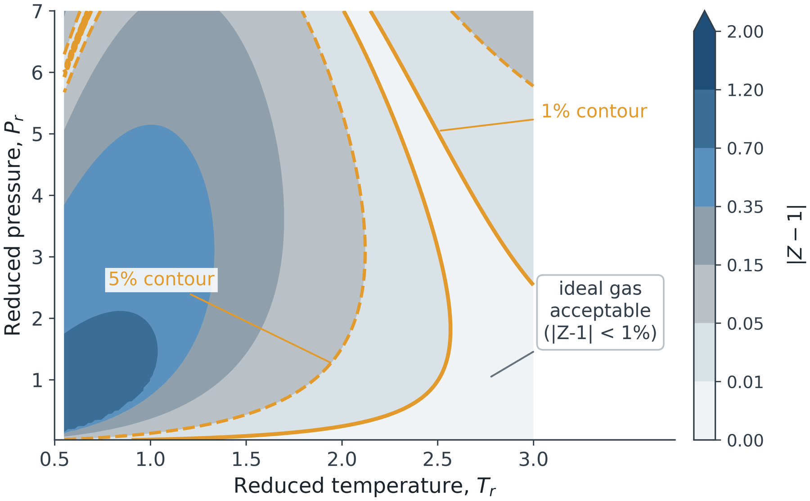
Physical meaning
Ideality is a low-density statement. The gas behaves ideally when the mean separation is large compared with the molecular diameter and the thermal energy is large compared with the well depth.
Engineering implication
For light gases above about twice the critical temperature and below a few bar, PV = RT is adequate for line sizing and vent calculations. Outside that window it is not defensible.
Chapter 2 · The ideal gas law
Distinguish failure by density from failure by proximity to saturation, and read both from the Z curve.
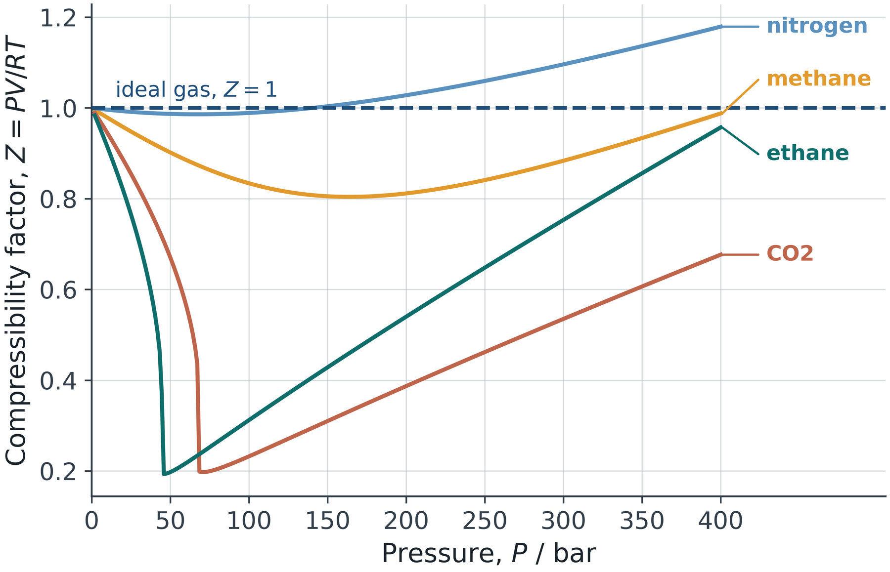
Physical meaning
The initial fall below unity is attraction. The eventual rise above unity is the finite size of the molecules. Both are absent from PV = RT by construction.
Engineering implication
Near saturation the error is not a smooth few per cent: it is a discontinuity, because a real fluid condenses and the ideal gas law does not know that phases exist.
Chapter 2 · The ideal gas law
Name the two omissions that the next model must repair, and predict the sign of each correction.
Omission 1 Molecules occupy volume
The volume available for molecular motion is smaller than the container volume. Replacing V by V minus b raises the predicted pressure at fixed T and V.
Expected sign: Z increases.
Omission 2 Molecules attract one another
A molecule approaching the wall is pulled back by its neighbours, so it delivers less momentum. The correction scales as the square of density.
Expected sign: Z decreases.
The consequence
Two corrections of opposite sign, with different density dependence, produce a compressibility factor that first falls, passes through a minimum, and then rises. No single-term correction can reproduce that shape. This is the structural reason every subsequent equation of state contains a repulsive term and an attractive term.
PART II
Chapter 3 The van der Waals equation of state
Chapter 4 The compressibility factor
Chapter 5 The virial equation and its statistical basis
Chapter 3 · The van der Waals equation of state
Derive the two corrections from a molecular argument rather than accept them as empirical terms.
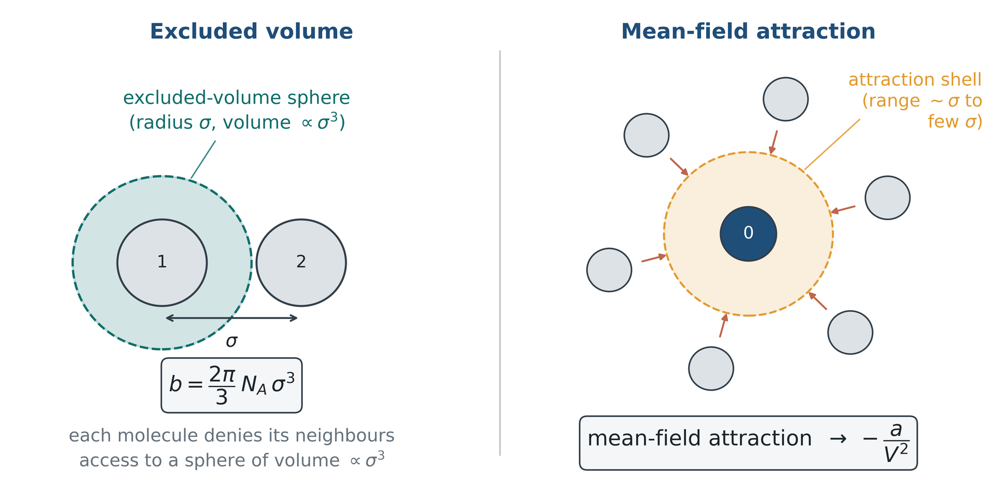
Excluded volume
Two hard spheres of diameter sigma cannot approach closer than sigma. The excluded volume per molecule is b = 2 pi N sigma cubed over 3, four times the hard-sphere volume.
Mean-field attraction
Each molecule feels an average attractive field proportional to the local density. The energy density therefore scales as density squared, giving a pressure reduction of a over V squared.
Chapter 3 · The van der Waals equation of state
Assemble the two corrections into a single cubic in volume and interpret each term.
b = \frac{2\pi}{3}N_{\mathrm{A}}\sigma^{3}
P = \frac{RT}{V-b} \;-\; \frac{a}{V^{2}}
Repulsive term: RT / (V - b)
Diverges as V approaches b, so the fluid cannot be compressed below the co-volume. This single change already produces Z greater than one at high density.
Attractive term: minus a / V squared
Reduces the pressure in proportion to density squared, because the number of interacting pairs per unit volume scales that way. Produces Z less than one at moderate density.
The structural point
Clearing denominators gives a cubic polynomial in V. Three real roots below the critical temperature correspond to a saturated liquid, a mechanically unstable state, and a saturated vapour. One equation now contains both phases.
Chapter 3 · The van der Waals equation of state
Use the critical isotherm inflection conditions to express a and b in terms of measurable critical constants.
\left(\frac{\partial P}{\partial V}\right)_{\!T_{\mathrm{c}}} = \left(\frac{\partial^{2} P}{\partial V^{2}}\right)_{\!T_{\mathrm{c}}} = 0
a = \frac{27R^{2}T_{\mathrm{c}}^{2}}{64P_{\mathrm{c}}}, \qquad b = \frac{RT_{\mathrm{c}}}{8P_{\mathrm{c}}}, \qquad Z_{\mathrm{c}} = 3/8 = 0.375
A prediction, not a fit
The critical compressibility is now a pure number: 3/8 for every substance, with no adjustable content. That is a genuine, falsifiable prediction of the theory. It is also, as the next slides show, the first place the theory is measurably wrong, and that failure drives the following one hundred years of development.
Chapter 3 · The van der Waals equation of state
Read phase behaviour directly from the shape of the predicted isotherms.
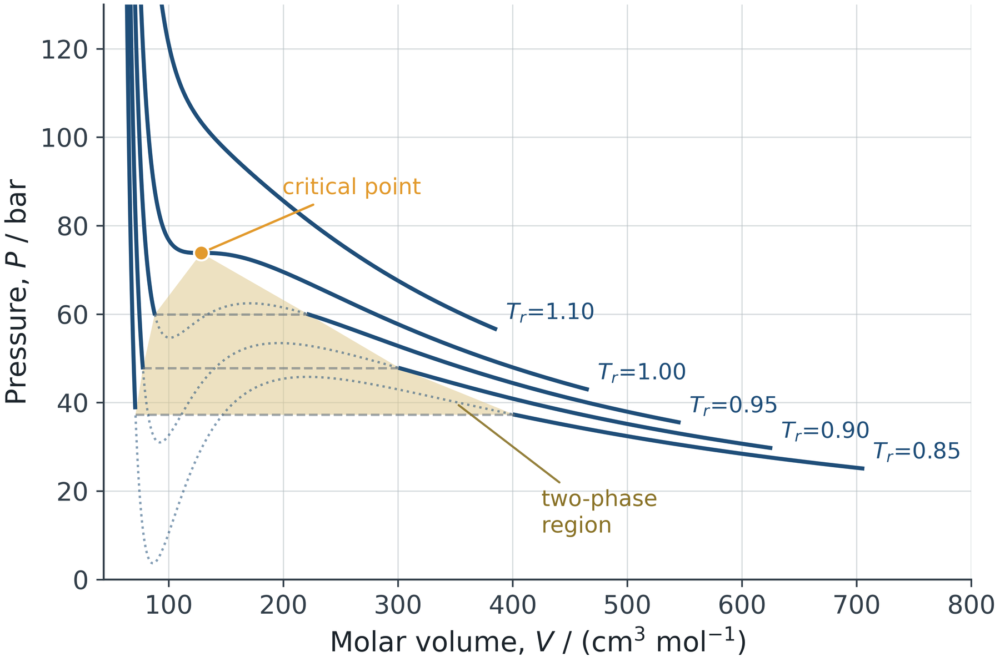
Physical meaning
One analytic expression produces a liquid branch, a vapour branch and a critical point. Before 1873 no theory did this.
Engineering implication
Cubic equations remain the only models fast and robust enough to be called millions of times inside a distillation column solver.
Chapter 3 · The van der Waals equation of state
Replace the mechanically unstable loop by the equilibrium saturation pressure using equality of Gibbs energy.
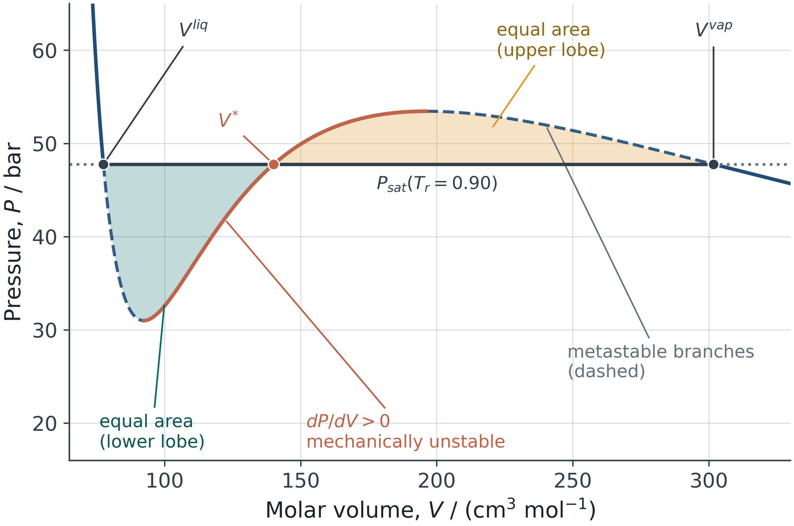
\int_{V^{L}}^{V^{V}}\left[P^{\mathrm{sat}} - P(V)\right]\mathrm{d}V = 0
What the rule enforces
Equality of molar Gibbs energy between the saturated liquid and the saturated vapour, which is the phase-equilibrium criterion applied along one isotherm.
The unstable branch
Where dP/dV is positive the fluid has negative compressibility and cannot exist. It is excluded by stability, not by the equation.
Chapter 3 · The van der Waals equation of state
Identify the specific quantitative failure that motivates every later cubic equation.
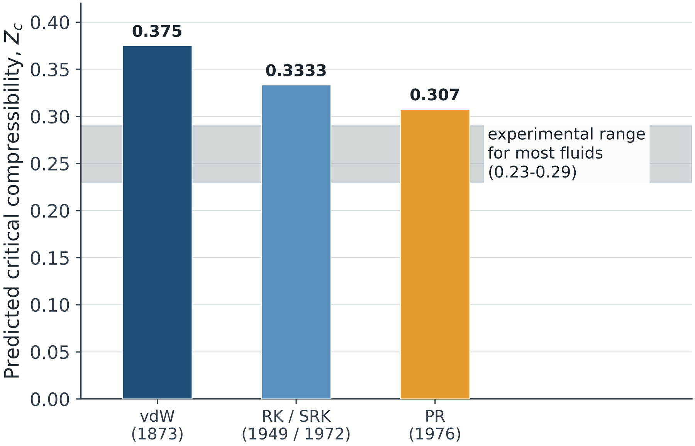
Motivates Chapter 8
Redlich and Kwong changed the volume dependence of the attraction and made it decay with temperature.
Chapter 4 · The compressibility factor
Interpret the sign of Z minus one, the location of the minimum, and the crossover, in molecular terms.
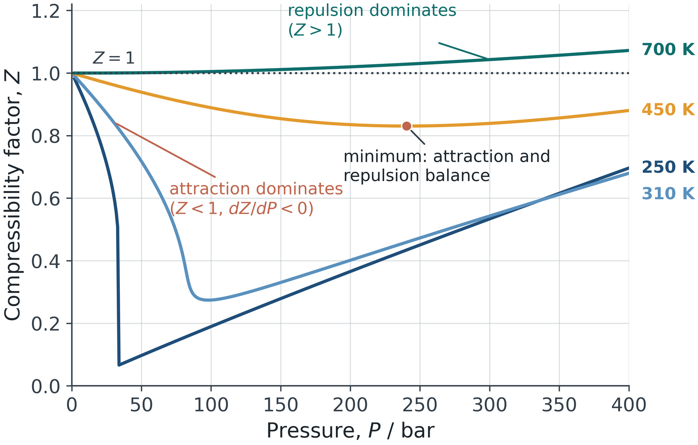
Z<1: \text{ attraction dominates} \qquad Z>1: \text{ repulsion dominates}
Z < 1
Attraction dominates: the fluid occupies less volume than an ideal gas at the same T and P.
Z > 1
Repulsion dominates: the finite molecular core resists compression and the fluid is stiffer than ideal.
Z = 1
Coincidence, not ideality. The two effects merely cancel.
Chapter 4 · The compressibility factor
Connect the initial slope of Z against P to the second virial coefficient and define the Boyle temperature.
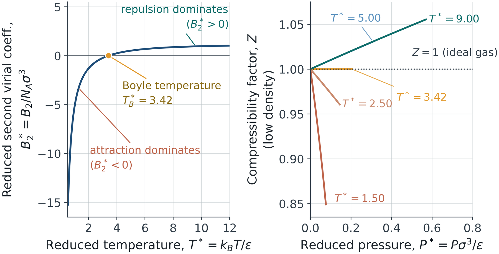
Lennard-Jones fluid: the second virial coefficient computed by numerical integration of the Mayer function gives a reduced Boyle temperature of 3.42.
\lim_{P\to 0}\left(\frac{\partial Z}{\partial P}\right)_{\!T} = \frac{B_{2}(T)}{RT}
B_{2}(T_{\mathrm{B}}) = 0
Reading the slope
Below the Boyle temperature the initial slope is negative: attraction wins first. Above it the slope is positive: the repulsive core is felt immediately.
Chapter 4 · The compressibility factor
Read Z from reduced coordinates and recognise the chart as the engineering form of corresponding states.
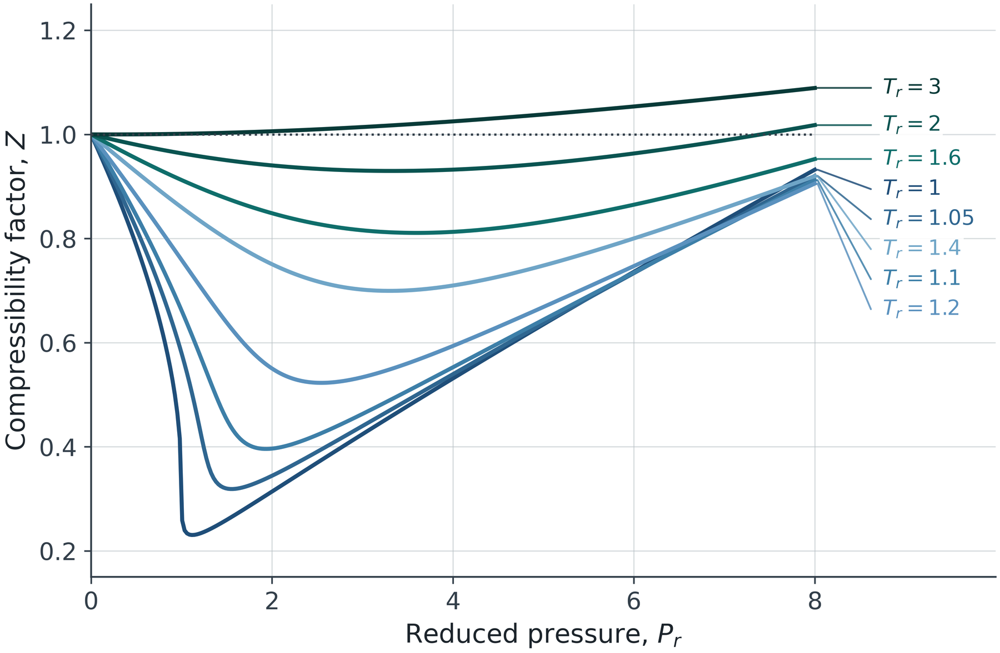
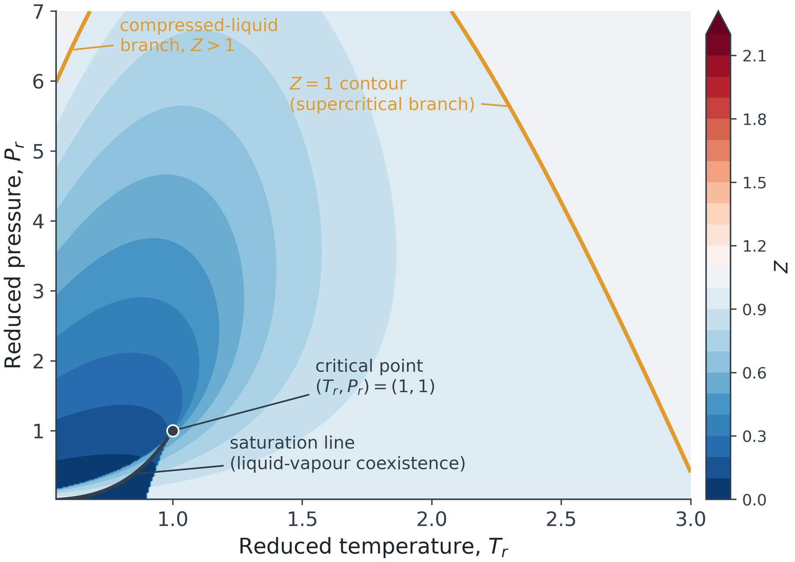
Left: the classical chart form. Right: the same information as a contour map of Z over the reduced state plane, with the saturation line and the Z = 1 contour marked.
Chapter 5 · The virial equation of state
Write the density and pressure expansions, relate their coefficients, and identify the physical content of each term.
Z = 1 + B_{2}\rho + B_{3}\rho^{2} + \cdots
Z = 1 + B'P + C'P^{2} + \cdots, \qquad B' = \frac{B_{2}}{RT}
Second coefficient
Two-body interactions only. Computable from the pair potential without approximation, and measurable from low-pressure PVT data.
Third coefficient
Three-body interactions, including genuine non-additive contributions. Far harder to measure and rarely available for industrial compounds.
Higher coefficients
Essentially unavailable. The series is therefore always truncated in practice, which restricts the equation to gases at moderate density.
The pedagogical point
The virial equation is the only equation in this course that is exact in principle. It is useless for liquids for exactly that reason: an exact expansion in density cannot be truncated where the density is high.
Chapter 5 · The virial equation of state
Connect a molecular-level potential to a macroscopic, measurable coefficient through the Mayer function.
B_{2}(T) = -2\pi N_{\mathrm{A}}\int_0^{\infty}\left[\mathrm{e}^{-u(r)/k_{\mathrm{B}}T}-1\right]r^{2}\,\mathrm{d}r
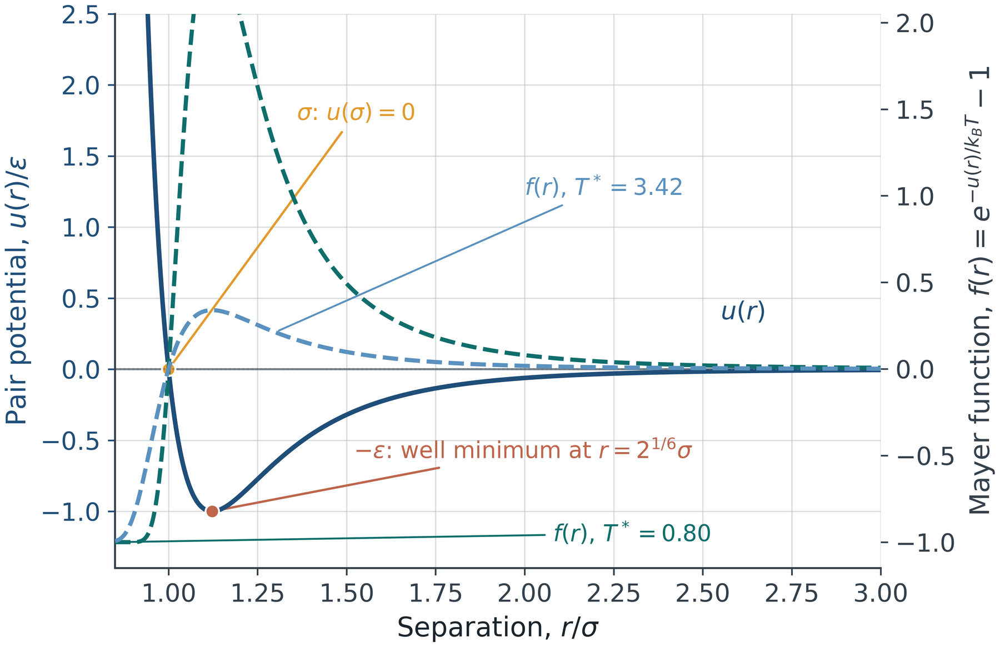
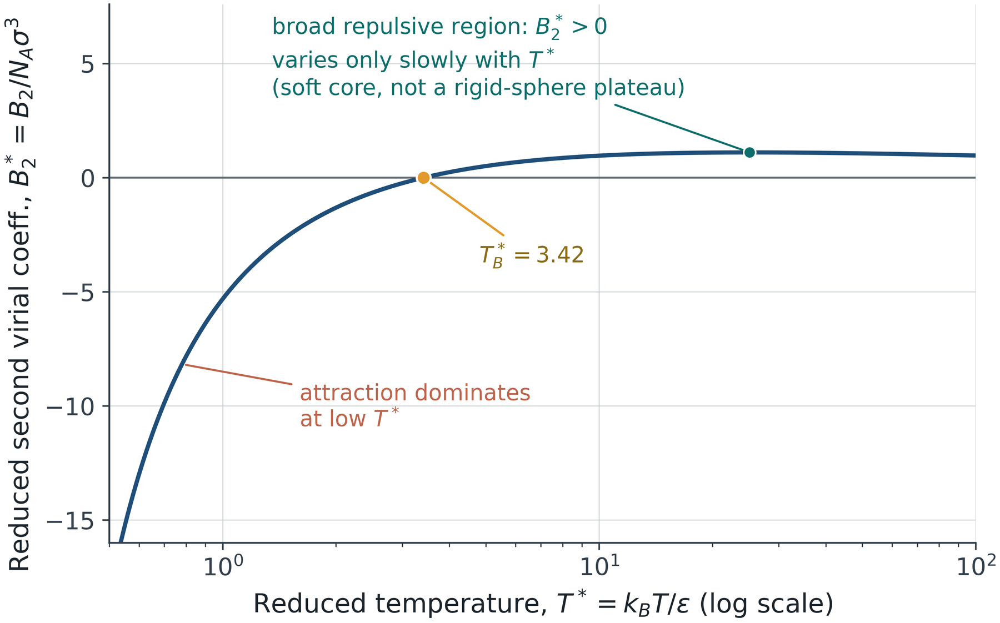
Left: the Lennard-Jones potential and its Mayer function at two temperatures. Right: the resulting second virial coefficient, negative at low temperature, crossing zero at the Boyle point.
Chapter 5 · The virial equation of state
Quantify the density at which two-term and three-term truncations fail, and draw the practical boundary.
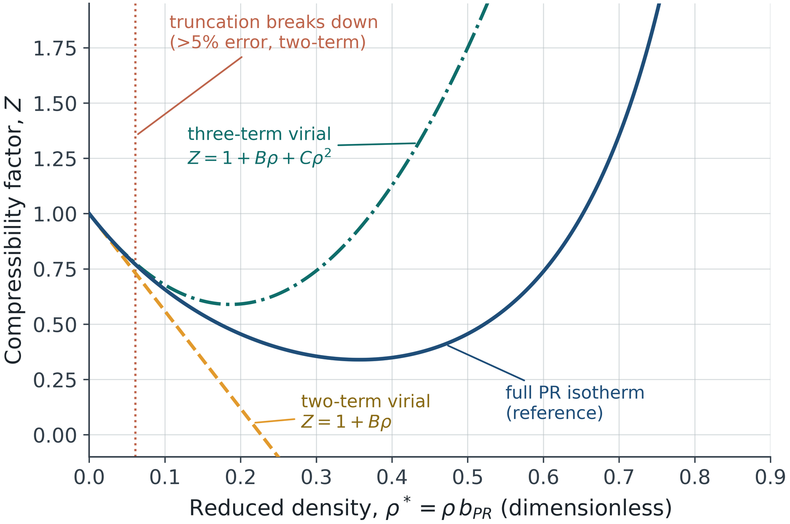
Physical meaning
Truncation is a statement about how many bodies interact simultaneously. At liquid density every molecule interacts with a dozen neighbours at once, so a two-body or three-body expansion cannot converge.
Engineering implication
For compressor and pipeline calculations in the gas phase the two-term virial equation is accurate and cheap. For anything involving a liquid it is not an option, which is why the cubic family survived.
PART III
Chapter 6 The principle of corresponding states
Chapter 7 The Pitzer acentric factor
Chapter 6 · The principle of corresponding states
Derive the reduced form of the van der Waals equation and recognise that it contains no substance-specific constant.
P_{\mathrm{r}} = \frac{8T_{\mathrm{r}}}{3V_{\mathrm{r}}-1} - \frac{3}{V_{\mathrm{r}}^{2}}
Z = Z(T_{\mathrm{r}},P_{\mathrm{r}}) \quad \text{for every fluid}
Where it works
Argon, krypton, xenon, methane and nitrogen: nearly spherical, non-polar molecules whose pair potentials are conformal, differing only by an energy scale and a length scale.
These are the simple fluids, and for them the collapse is close to exact.
Where it must fail
Elongated molecules such as n-octane, polar molecules such as ammonia, quadrupolar molecules such as carbon dioxide, and hydrogen-bonding molecules such as water.
Their potentials are not conformal, so no rescaling can superimpose them.
Chapter 6 · The principle of corresponding states
Observe the collapse for simple fluids and the systematic departure for polar and associating fluids.
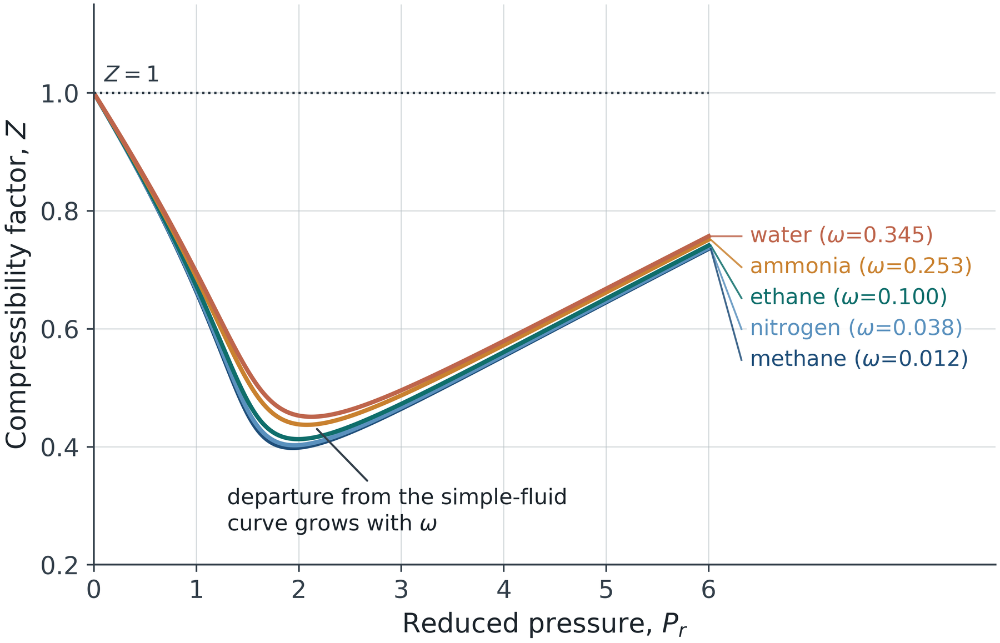
Physical meaning
Two parameters force a single universal critical compressibility. Real fluids have critical compressibilities from 0.23 to 0.29, so a two-parameter theory cannot be exact for all of them.
Engineering implication
Two-parameter charts are adequate for light hydrocarbons and permanent gases. For refrigerants, water and amines they are not, and a third parameter is mandatory.
Chapter 7 · The Pitzer acentric factor
Show that reduced vapour-pressure curves have different slopes, and that the slope carries the missing information.
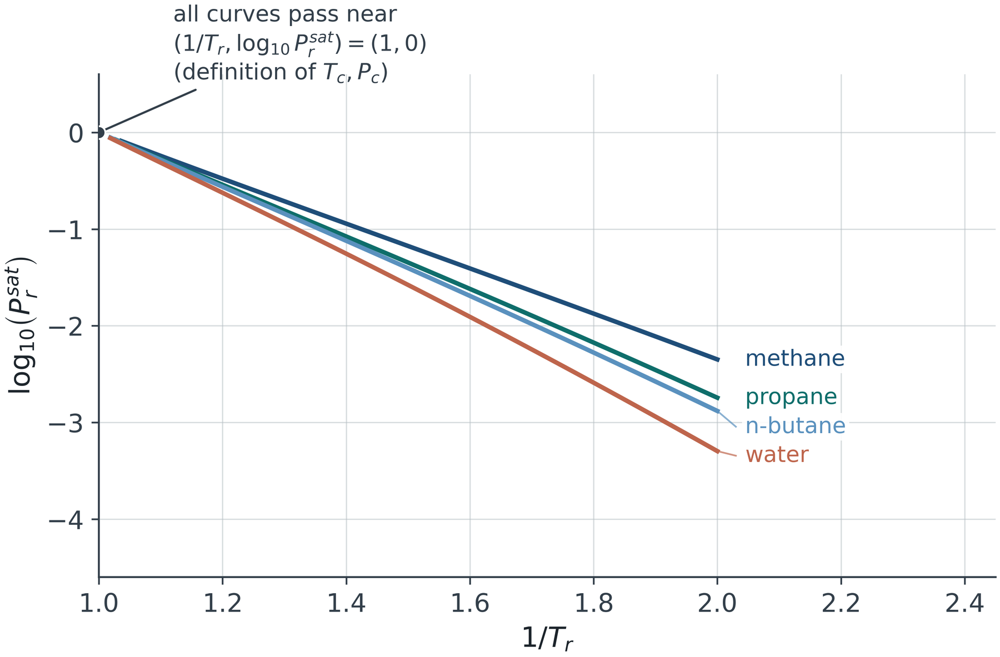
Physical meaning
In reduced coordinates every vapour-pressure line is pinned at the critical point. What distinguishes fluids is how steeply the line falls, which reflects the strength and directionality of the intermolecular forces.
Engineering implication
This is a practical choice as well as a physical one: vapour pressure is the most widely measured property in chemical engineering, so a parameter defined from it is available for essentially every compound.
Chapter 7 · The Pitzer acentric factor
Define the acentric factor from a single point on the reduced vapour-pressure curve and interpret it physically.
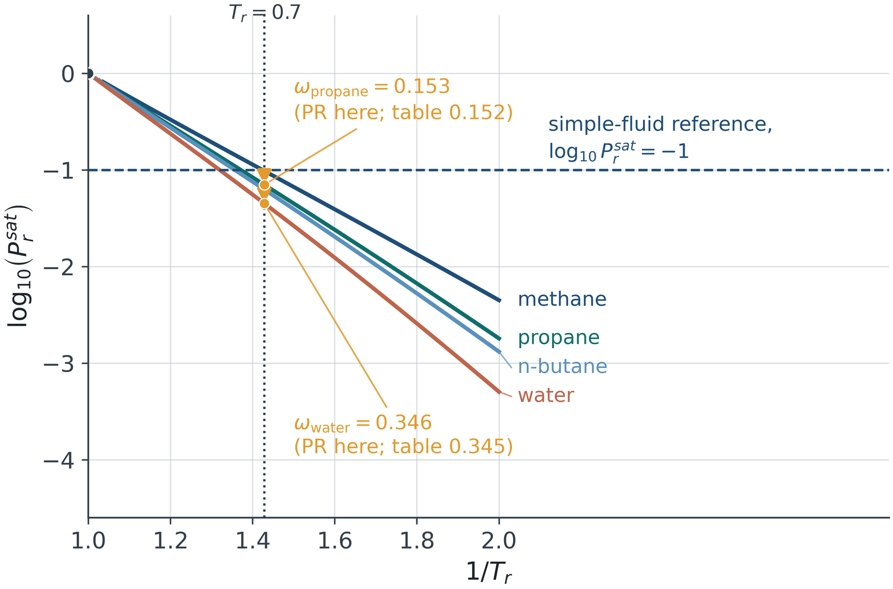
\omega \;\equiv\; -1 - \log_{10}\left(P_{\mathrm{r}}^{\mathrm{sat}}\right)_{T_{\mathrm{r}}=0.7}
Why reduced temperature 0.7
Close to the normal boiling point of many fluids, comfortably subcritical, easily measured, and far enough from the critical point to avoid critical anomalies.
Physical meaning
The acentric factor measures how far the intermolecular force field departs from spherical symmetry. It increases with chain length, with polarity and with hydrogen bonding.
Chapter 7 · The Pitzer acentric factor
Relate the numerical value of the acentric factor to molecular architecture, and state the three-parameter correlation.
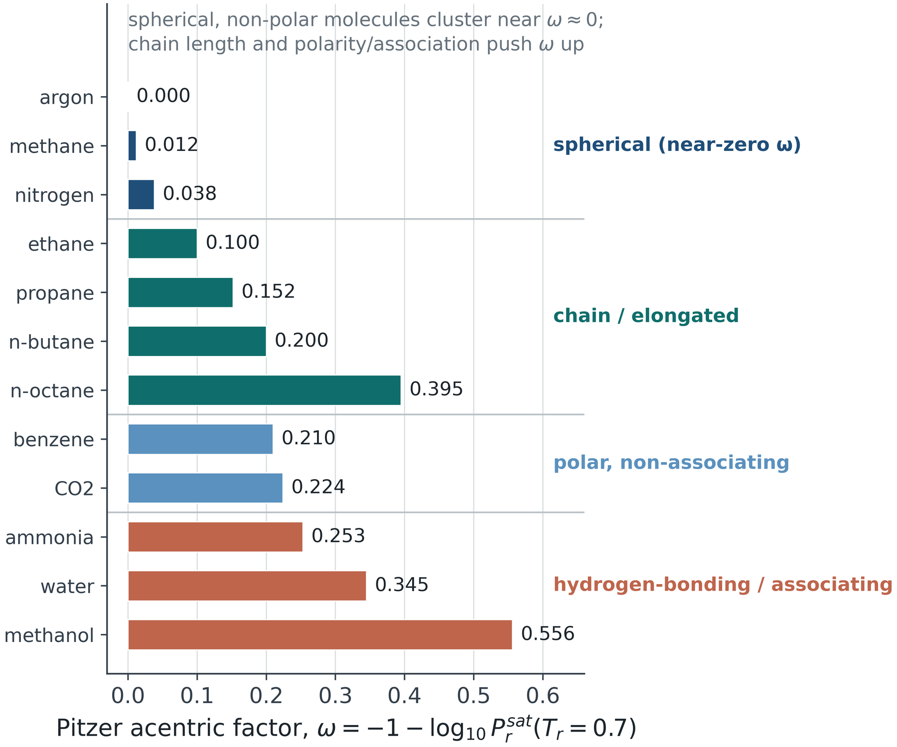
Z = Z^{(0)}(T_{\mathrm{r}},P_{\mathrm{r}}) \;+\; \omega\,Z^{(1)}(T_{\mathrm{r}},P_{\mathrm{r}})
Three-parameter corresponding states
A simple-fluid reference surface plus a linear correction weighted by the acentric factor. The Lee-Kesler tables are the standard numerical implementation.
Where it still fails
Strongly associating fluids, whose reduced vapour-pressure curves are not straight, so a single slope parameter cannot represent them.
PART IV
Chapter 8 Redlich-Kwong, 1949
Chapter 9 Soave-Redlich-Kwong, 1972
Chapter 10 Peng-Robinson, 1976, and the industrial standard
Chapter 8 · Redlich-Kwong
Identify the two independent modifications of the van der Waals attraction term and their separate effects.
P = \frac{RT}{V-b} \;-\; \frac{a}{\sqrt{T}\,V(V+b)}
a = \frac{0.42748\,R^{2}T_{\mathrm{c}}^{5/2}}{P_{\mathrm{c}}}, \qquad b = \frac{0.08664\,RT_{\mathrm{c}}}{P_{\mathrm{c}}}, \qquad Z_{\mathrm{c}} = 1/3 = 0.3333
Change 1 Temperature dependence
The attraction is divided by the square root of temperature. Physically, at higher kinetic energy molecules spend less time in the attractive well, so the mean-field average of the attractive energy falls.
Change 2 Volume dependence
The denominator becomes V(V + b) rather than V squared. This softens the attraction at high density and lowers the predicted critical compressibility from 0.375 to 0.333.
Chapter 8 · Redlich-Kwong
Compare the alpha functions of the four classical cubics and see how each encodes a different physical assumption.
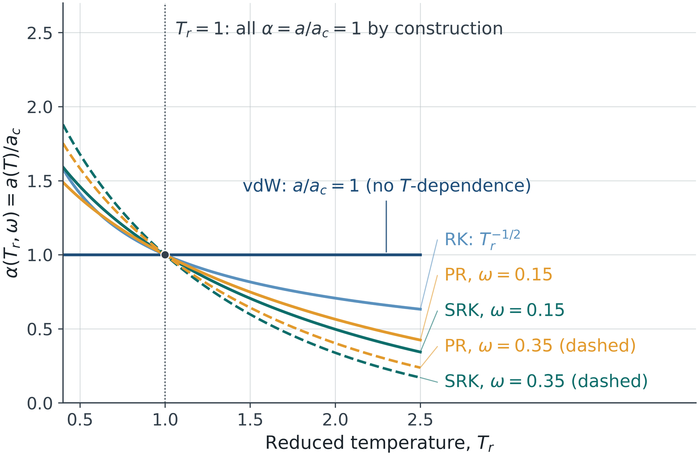
a(T) = a_{\mathrm{c}}\,\alpha(T_{\mathrm{r}},\omega), \qquad \alpha(1,\omega) = 1
Chapter 8 · Redlich-Kwong
Separate the genuine improvement in the vapour phase from the persistent failures in the liquid phase.
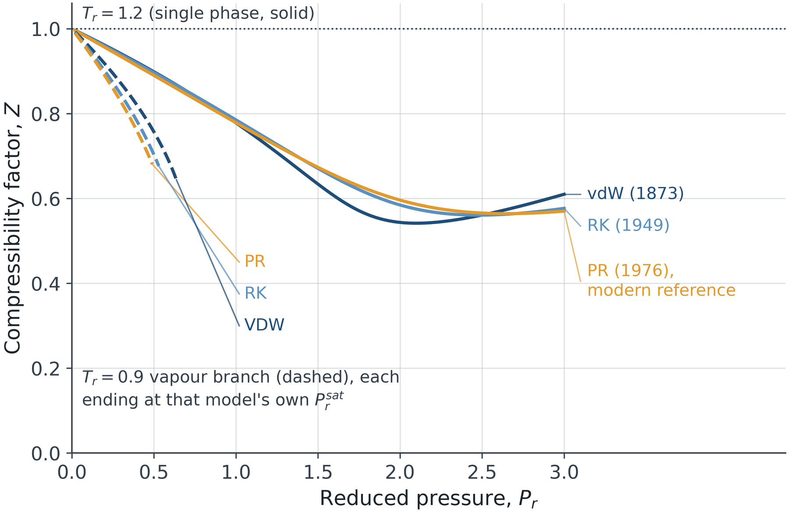
Physical meaning
The vapour-phase compressibility improves substantially: errors of several per cent under van der Waals fall to about one per cent for simple fluids.
Engineering implication
Liquid densities remain poor and vapour pressures remain wrong for anything but simple fluids, because no molecular shape or polarity parameter enters the equation.
Chapter 9 · Soave-Redlich-Kwong
Replace the assumed power law by an alpha function regressed against experimental vapour pressures.
P = \frac{RT}{V-b} \;-\; \frac{a_{\mathrm{c}}\,\alpha(T_{\mathrm{r}},\omega)}{V(V+b)}
\alpha = \left[1+m\left(1-\sqrt{T_{\mathrm{r}}}\right)\right]^{2}, \qquad m = 0.480+1.574\,\omega-0.176\,\omega^{2}
The new physics
Molecular shape and polarity enter the equation of state for the first time, through the acentric factor, and they enter the attraction term where they physically belong.
Alpha equals one at the critical temperature by construction, so the critical constants are preserved exactly.
Why this was decisive
Vapour pressures became quantitative for hydrocarbons, and therefore so did equilibrium ratios. This is the point at which process simulation of hydrocarbon separations became reliable enough for design rather than for checking.
Chapter 9 · Soave-Redlich-Kwong
Quantify the improvement Soave’s alpha function delivers relative to the fixed Redlich-Kwong power law.
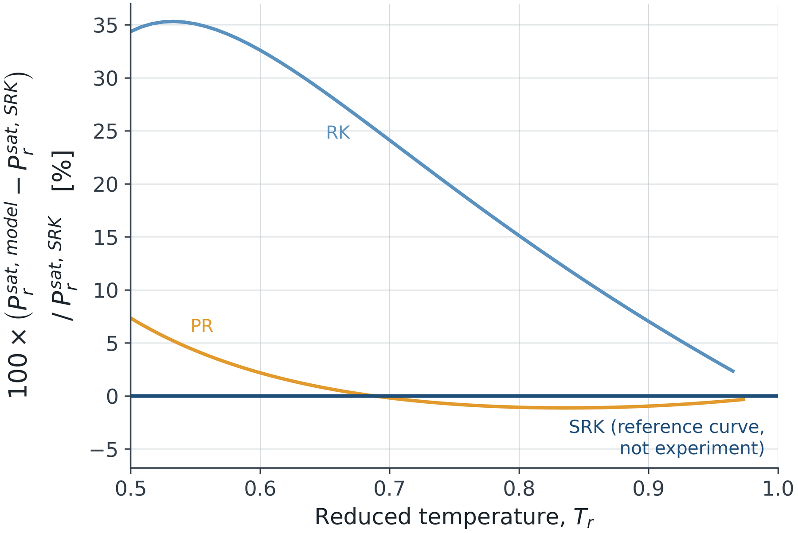
Physical meaning
The fixed power law of Redlich-Kwong is equivalent to assigning every substance the same acentric factor. Soave’s regression removes that constraint.
Engineering implication
Deviations exceeding thirty per cent at low reduced temperature translate directly into equilibrium-ratio errors, and therefore into stage counts and reflux ratios.
Chapter 10 · Peng-Robinson
Identify the change in the denominator, its effect on the critical compressibility, and the resulting cubic in Z.
P = \frac{RT}{V-b} \;-\; \frac{a_{\mathrm{c}}\,\alpha(T_{\mathrm{r}},\omega)}{V(V+b)+b(V-b)}
a_{\mathrm{c}} = \frac{0.45724\,R^{2}T_{\mathrm{c}}^{2}}{P_{\mathrm{c}}}, \qquad b = \frac{0.07780\,RT_{\mathrm{c}}}{P_{\mathrm{c}}}, \qquad Z_{\mathrm{c}} = 0.3074
The new physics
A softer, longer-ranged effective attraction at high density, which is what a real liquid experiences. The critical compressibility falls to 0.3074, much closer to the measured range.
Reduced to a cubic in Z, solved analytically
Z^{3} - (1-B)Z^{2} + \left(A-3B^{2}-2B\right)Z - \left(AB-B^{2}-B^{3}\right) = 0
A \equiv \frac{a P}{R^{2}T^{2}}, \qquad B \equiv \frac{bP}{RT}
Chapter 10 · Peng-Robinson
Compare saturated liquid volumes and coexistence envelopes from Soave and Peng-Robinson.
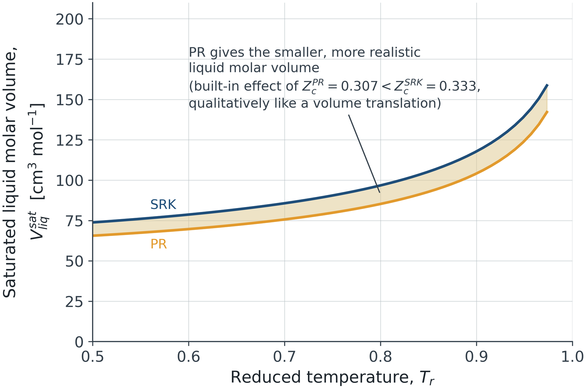
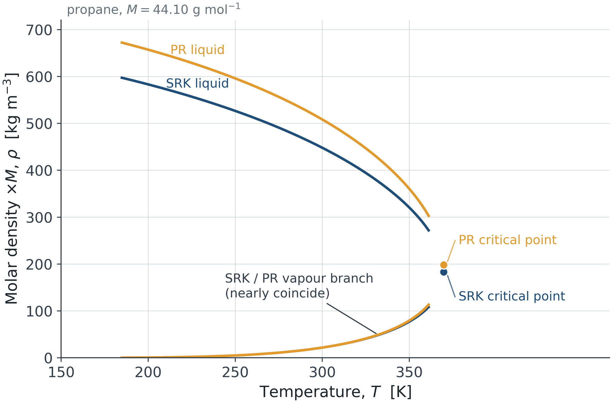
Left: saturated liquid molar volume of propane. Right: the coexistence envelope in density-temperature coordinates. The two models agree closely on the vapour branch and differ systematically on the liquid branch.
Chapter 10 · Peng-Robinson
Assess the four classical cubics on the criteria that actually decide model selection in industry.
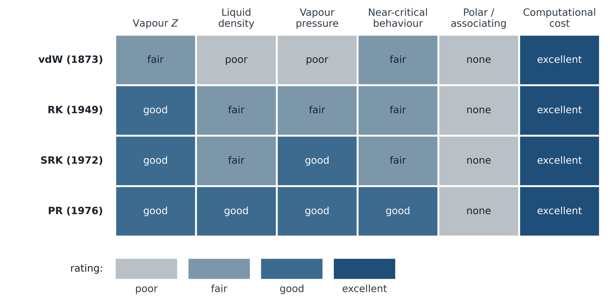
Physical meaning
Each row adds one piece of physics and each addition shows up in exactly one or two columns. No row adds physics that improves every column at once.
Engineering implication
The final column explains the persistence of the family: all four are solvable analytically or in a few Newton steps, which is what an inner-loop model must be.
Chapter 10 · Peng-Robinson
Explain the adoption of Peng-Robinson in engineering rather than purely scientific terms, and name the standard patches.
Standard patch 1 Volume translation
Peneloux and co-workers, 1982: a constant volume shift per compound that corrects liquid density without disturbing the predicted vapour-liquid equilibrium.
Standard patch 2 Mathias-Copeman alpha
A three-constant alpha function fitted per compound, used when vapour pressures of polar species must be reproduced accurately.
The cost of every patch, and the limit of the family
Each patch buys accuracy with an additional fitted constant per compound, so predictive power for new molecules is not improved. No amount of patching introduces chain connectivity, hydrogen bonding or electrostatics, because none of those quantities appears anywhere in a cubic equation.
Chapter 10 · Peng-Robinson
Assemble the three expressions needed for a flash calculation and identify the most common practical error.
\ln\varphi = Z-1-\ln(Z-B) \;-\; \frac{A}{2\sqrt{2}\,B}\,\ln\frac{Z+(1+\sqrt{2})B}{Z+(1-\sqrt{2})B}
a_{\mathrm{mix}} = \sum_i\sum_j y_iy_j\sqrt{a_ia_j}\,(1-k_{ij}), \qquad b_{\mathrm{mix}} = \sum_i y_ib_i
The most common practical error
Selecting the wrong root of the cubic. Below the critical temperature there may be three real roots; the middle root is mechanically unstable and always discarded, and the choice between the smallest and the largest must be made by comparing the fugacity coefficient, never by assumption.
A wrong root gives an answer that is not slightly wrong but wrong by the density ratio between a liquid and a vapour.
Mixtures
The van der Waals one-fluid mixing rules reduce a mixture to a pseudo-pure component. The binary interaction parameter is fitted to binary vapour-liquid equilibrium data and is the only adjustable quantity.
Setting it to zero is a defensible default for similar hydrocarbons and is not defensible for a hydrocarbon with carbon dioxide, water or an alcohol.
PART V
Chapter 11 SAFT and the statistical associating fluid theory
Chapter 12 Electrolyte equations of state
Chapter 13 Future directions
Chapter 11 · SAFT
Contrast writing down a pressure with writing down a residual Helmholtz energy as a sum of separable contributions.
P = \rho^{2}\left(\frac{\partial\left(A^{\mathrm{res}}/N\right)}{\partial\rho}\right)_{\!T} + \rho\,k_{\mathrm{B}}T
\tilde a^{\mathrm{res}} = \tilde a^{\mathrm{hs}} + \tilde a^{\mathrm{chain}} + \tilde a^{\mathrm{disp}} + \tilde a^{\mathrm{assoc}}
Wertheim 1984 to 1986
First-order thermodynamic perturbation theory for fluids with highly directional attractive forces. This is the mathematics that makes hydrogen bonding tractable as a free-energy contribution rather than as a fitted correction.
Chapman and co-workers 1990, Gross and Sadowski 2001
SAFT turned the theory into an engineering equation of state. PC-SAFT then perturbed about the hard-chain rather than the hard-sphere reference, which improved the description of long molecules substantially.
Chapter 11 · SAFT
Attribute each Helmholtz contribution to a specific molecular mechanism and to the cubic-equation defect it repairs.
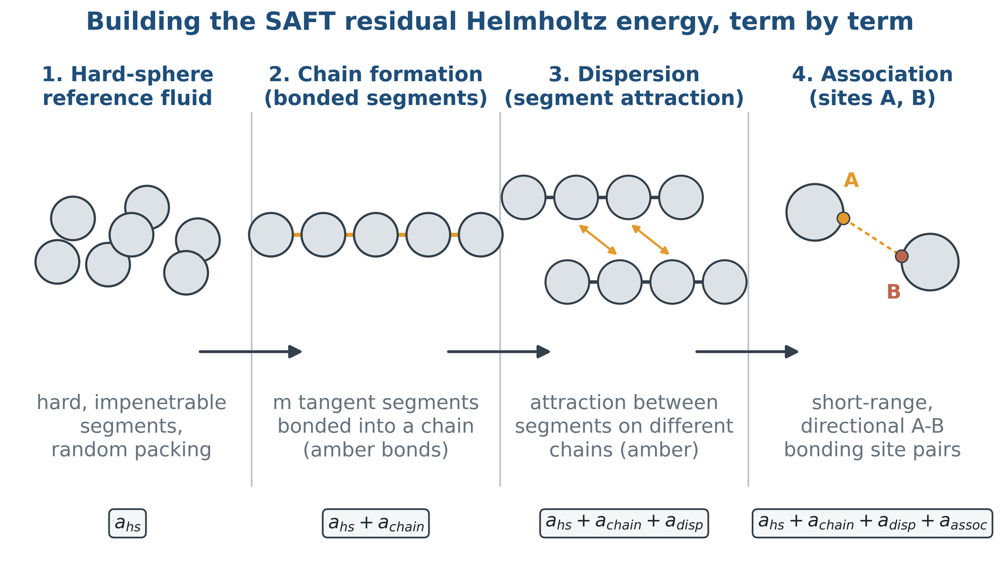
Hard sphere
Excluded volume treated with the Carnahan-Starling result rather than a single constant b.
Chain
Connectivity of bonded segments. Replaces the acentric factor with a structural parameter.
Dispersion
Attraction between segments from perturbation theory rather than a mean field.
Association
Short-range directional bonding. No cubic equation contains this at all.
Chapter 11 · SAFT
Read each contribution and identify the molecular parameter it introduces.
Hard-sphere reference (Carnahan-Starling)
\tilde a^{\mathrm{hs}} = \frac{4\eta-3\eta^{2}}{(1-\eta)^{2}}
Chain formation
\tilde a^{\mathrm{chain}} = (1-m)\ln g^{\mathrm{hs}}(\sigma)
Association (Wertheim TPT1)
\tilde a^{\mathrm{assoc}} = \sum_{A}\left[\ln X^{A} - \frac{X^{A}}{2}\right] + \frac{M}{2}
Association strength
\Delta^{AB} = g^{\mathrm{hs}}\,\kappa^{AB}\left[\mathrm{e}^{\varepsilon^{AB}/k_{\mathrm{B}}T}-1\right]
The five molecular parameters
Segment number, segment diameter, segment energy, association energy and association volume. For an n-alkane series the segment number grows almost linearly with carbon number while the diameter and energy remain nearly constant, which is why SAFT extrapolates to polymers and cubics do not.
Chapter 11 · SAFT
Judge the relative magnitude of each contribution and the class of systems on which the investment pays.
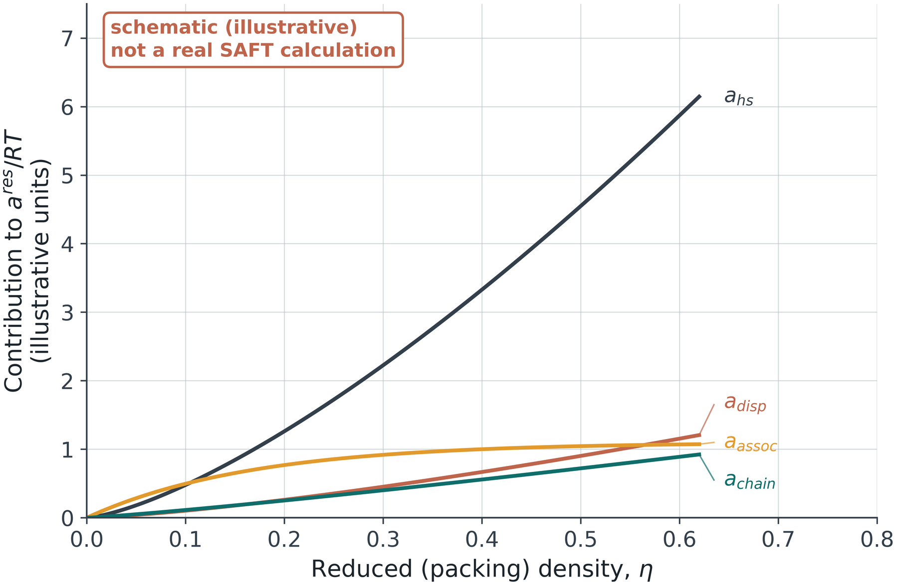
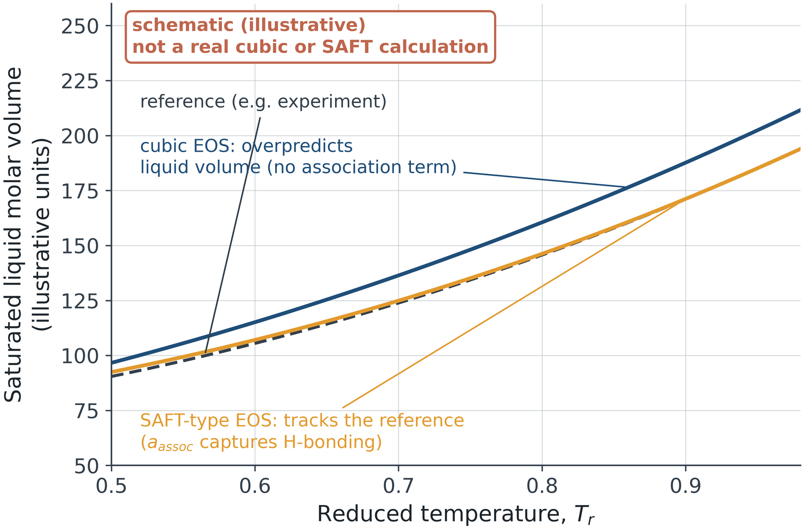
Both panels are schematic illustrations of the qualitative behaviour, not output from a validated SAFT implementation.
Chapter 12 · Electrolyte equations of state
Recognise that Coulomb interactions are long ranged and require terms with no counterpart in a neutral-fluid model.
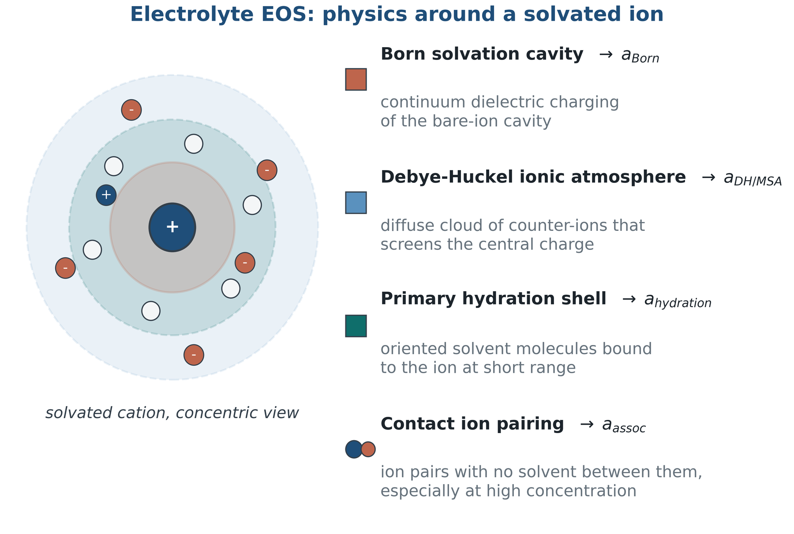
The Debye screening length sets the range over which an ion feels the surrounding ionic atmosphere.
\kappa^{-1} = \left(\frac{\varepsilon_{\mathrm{r}}\varepsilon_{0}k_{\mathrm{B}}T}{e^{2}\sum_i \rho_i z_i^{2}}\right)^{\!1/2}
Chapter 12 · Electrolyte equations of state
Add the electrostatic and solvation contributions to a molecular reference and identify what each one describes.
\tilde a^{\mathrm{res}} = \tilde a^{\mathrm{SAFT}} + \tilde a^{\mathrm{Born}} + \tilde a^{\mathrm{DH/MSA}}
A^{\mathrm{Born}} = -\frac{N_{\mathrm{A}}e^{2}}{8\pi\varepsilon_{0}}\sum_i x_i z_i^{2}\left(1-\frac{1}{\varepsilon_{\mathrm{r}}}\right)\frac{1}{r_i}
\log_{10}\gamma_{\pm} = -A\,|z_{+}z_{-}|\sqrt{I}
Molecular reference
Hard sphere, chain, dispersion and association terms describing the solvent and the uncharged part of the interactions, taken directly from SAFT.
Born solvation
The free energy of charging an ion inside a dielectric medium. Usually the largest single contribution, and strongly dependent on the ionic radius.
Ion-ion screening
Debye-Huckel or the mean spherical approximation, describing the ionic atmosphere that screens each central charge.
The Debye-Huckel expression is a limiting law, exact only as the ionic strength approaches zero. Battery and capture solvents operate one to three orders of magnitude above that limit, where ion pairing, hydration and the composition dependence of the dielectric constant all matter.
Chapter 12 · Electrolyte equations of state
Explain the minimum and upturn in the mean ionic activity coefficient in terms of competing physics.
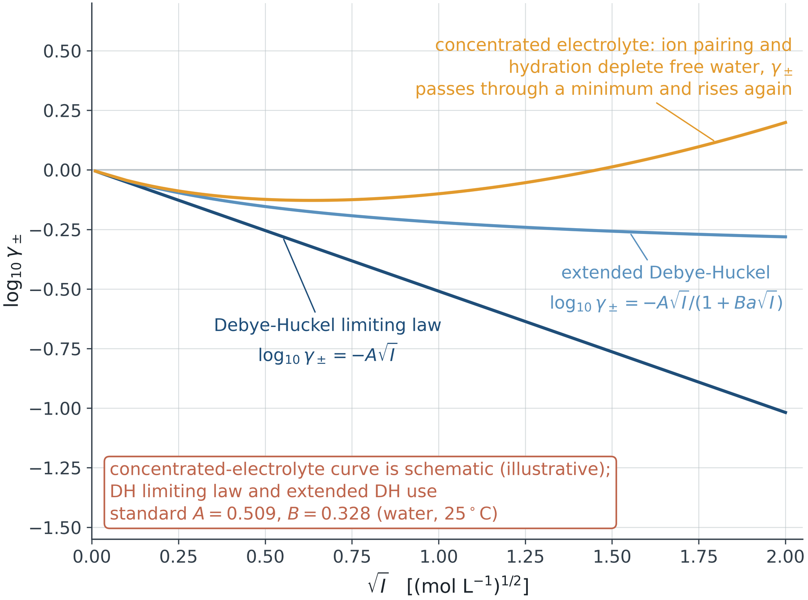
Physical meaning
Screening lowers the activity coefficient. Solvent depletion and hydrated-ion repulsion raise it. The minimum is where the two mechanisms balance.
Engineering implication
Salt solubility limits, low-temperature precipitation in battery electrolytes and amine degradation in capture solvents all depend on the region beyond the minimum.
Chapter 12 · Electrolyte equations of state
Map electrolyte thermodynamic outputs onto the design targets of an electrochemical cell.
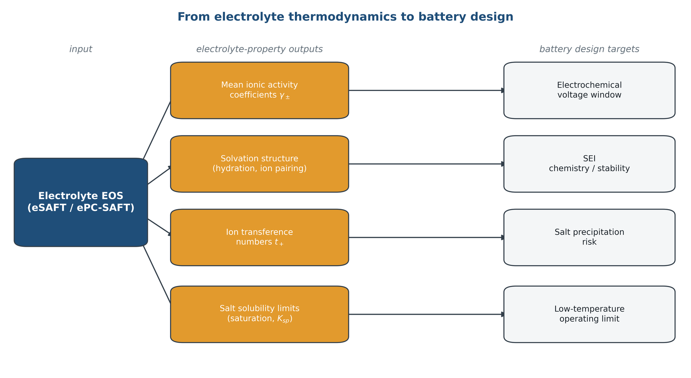
Physical meaning
The solvation shell is the physical object that connects thermodynamics, transport and interfacial chemistry in a cell. An equation of state that resolves it describes all three consistently.
Engineering implication
Voltage window, solid-electrolyte-interphase chemistry, salt precipitation risk and low-temperature operating limit are all set by properties an electrolyte equation of state can compute.
Chapter 13 · Future directions
Identify the four active research directions and the specific limitation each one addresses.
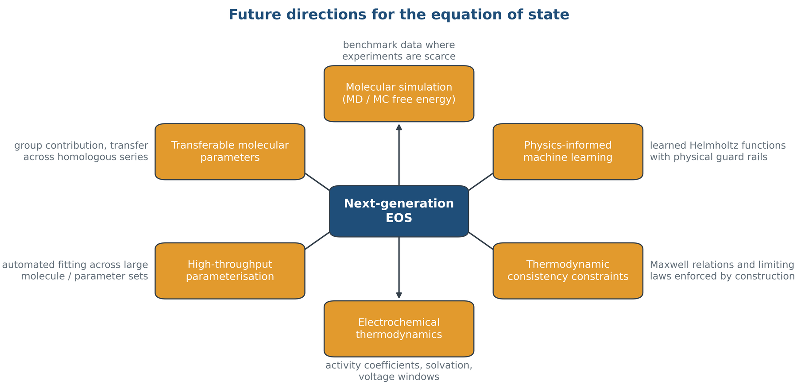
Physical meaning
Each direction targets a specific gap: missing data, rigid functional form, unenforced thermodynamic consistency, or unmodelled electrochemical coupling.
Engineering implication
The practical near-term gain is parameter estimation for compounds that have never been measured, which is the binding constraint in specialty chemicals and in new battery chemistries.
Chapter 13 · Future directions
Describe an architecture that learns a Helmholtz function under hard thermodynamic constraints.
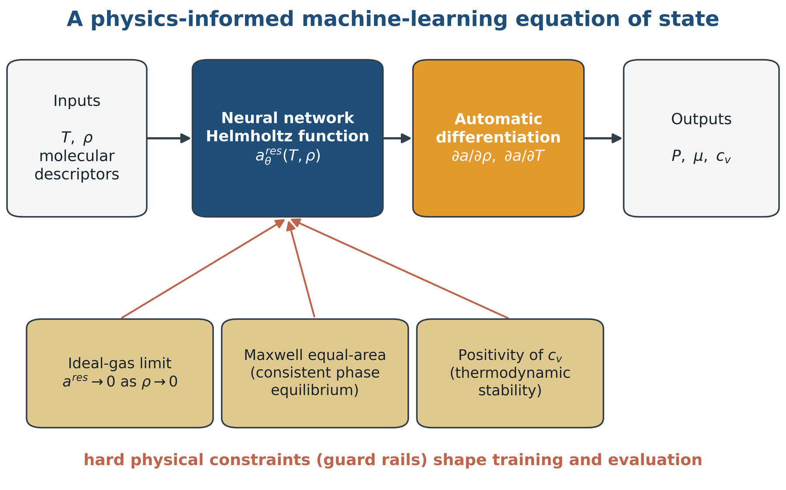
A^{\mathrm{res}}_{\theta}(T,\rho,\mathbf{d}) \;\longrightarrow\; P,\;\mu_i,\;c_v \;\; \text{by automatic differentiation}
\lim_{\rho\to 0}A^{\mathrm{res}} = 0, \qquad c_v > 0, \qquad \oint V\,\mathrm{d}P = 0
The honest failure mode is extrapolation. Inside the training envelope such models are accurate; outside it they remain confident and are not. Any deployment must include an explicit domain-of-validity check.
Conclusion
Restate the thesis of the course and convert it into a working rule for model selection.
The rule to take away
Do not ask whether an equation of state is accurate. Ask which physics it contains, and whether that physics is the physics of your problem. Every model in this course answers that question honestly if you know how to read it.
Conclusion
Locate the primary sources and the standard graduate texts for each part of the course.
Graduate texts
Smith, Van Ness, Abbott and Swihart, Introduction to Chemical Engineering Thermodynamics, 9th edition, 2022.
Prausnitz, Lichtenthaler and de Azevedo, Molecular Thermodynamics of Fluid-Phase Equilibria, 3rd edition, 1999.
Poling, Prausnitz and O’Connell, The Properties of Gases and Liquids, 5th edition, 2001.
Sandler, Chemical, Biochemical, and Engineering Thermodynamics, 5th edition, 2017.
Kontogeorgis and Folas, Thermodynamic Models for Industrial Applications, 2010.
Primary literature
van der Waals, doctoral thesis, Leiden, 1873.
Redlich and Kwong, Chemical Reviews 44 (1949) 233.
Pitzer and co-workers, Journal of the American Chemical Society 77 (1955) 3427 and 3433.
Soave, Chemical Engineering Science 27 (1972) 1197.
Peng and Robinson, Industrial and Engineering Chemistry Fundamentals 15 (1976) 59.
Wertheim, Journal of Statistical Physics 35 (1984) 19 and 35; 42 (1986) 459 and 477.
Chapman, Gubbins, Jackson and Radosz, Industrial and Engineering Chemistry Research 29 (1990) 1709.
Gross and Sadowski, Industrial and Engineering Chemistry Research 40 (2001) 1244.
Module EOS · closing
Read
The lecture notes carry the full derivations behind every slide. The worked examples work four problems end to end, with the arithmetic shown.
Run
Every figure in this deck is generated by a Python script you can download and edit. Change a parameter, re-run, and watch what the physics does.
Ask
Bring one fluid from your own research to the next session, and be ready to say which rung of the ladder it needs.